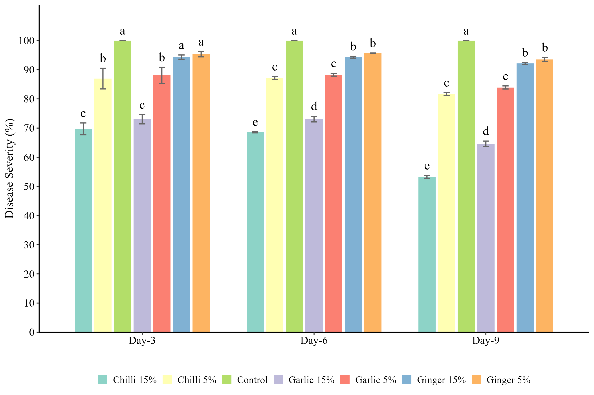
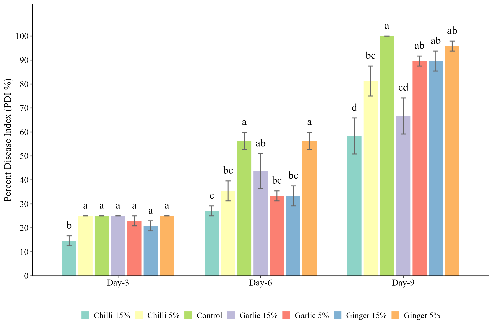
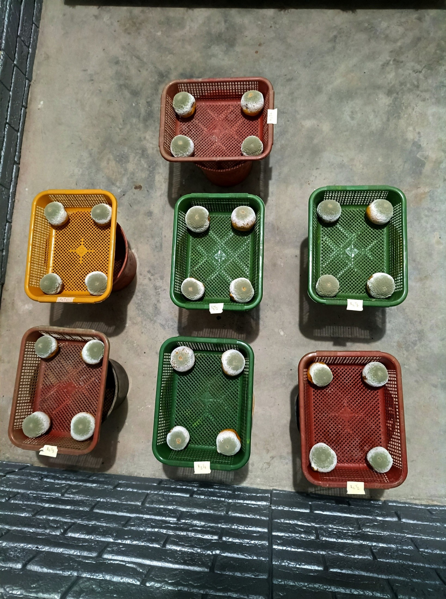
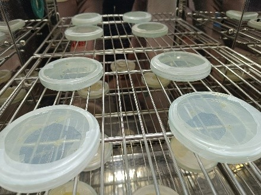
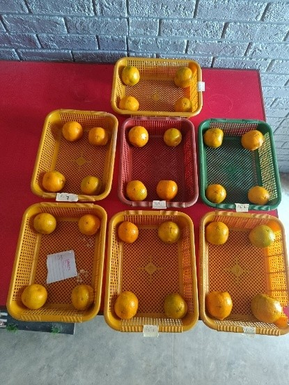
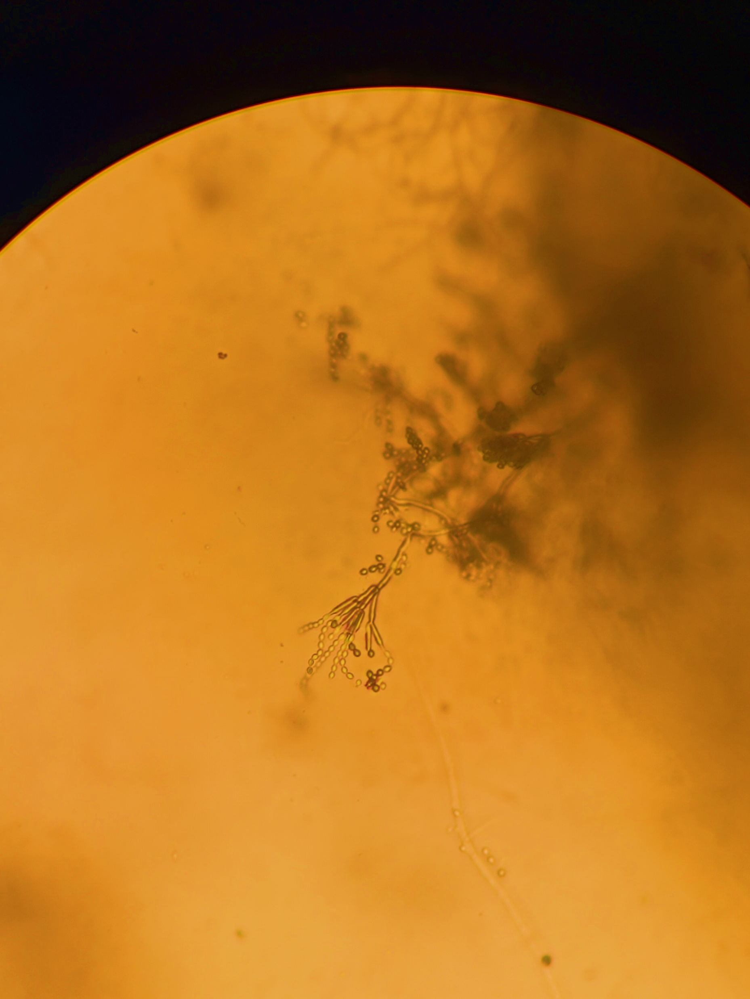

Background
Citrus is a key horticultural crop in Nepal, grown across 64 districts, but post-harvest losses remain high, affecting 30–50% of production. Fungal pathogens, particularly Penicillium digitatum, cause green mould, the most economically damaging postharvest disease, leading to fruit shrinkage and mycotoxin contamination. Conventional treatments rely on chemical fungicides, raising concerns about health, environmental impact, and resistance. Botanical extracts offer a safer, biodegradable alternative with antifungal and antioxidant properties. However, their effectiveness against P. digitatum in Nepalese citrus, especially mandarins, remains largely unexplored.
Objective
To evaluate the efficacy of different botanical extracts against green mould (Penicillium digitatum) and provide
a low-cost and sustainable approach to reduce post-harvest loss for small-scale citrus farmers. P. digitatum.
Materials & Methods
Surface-sterilized fruits were dipped in extracts for 3 min, wounded, and inoculated with spore suspension (1×106 spores/ml). Storage was at 25±2°C, >85% RH, and observations recorded at 3, 6, 9 days post-inoculation.
Results

Disease severity was lowest in chilli 15% (53.28%) and highest in control (100%). Garlic also reduced severity, while ginger was less effective.

PDI was lowest in chilli 15% (58.33%), highest in control (100%). Garlic 15% was effective; ginger minimal effect.

Maximum percent inhibition of pathogen growth was seen in chilli 15% (46.72%) and garlic 15% (35.25%). Ginger extracts showed 6–7.8% inhibition.
Gallery




Future Prospects
Botanical extracts effectively inhibited P. digitatum growth. The antifungal effect is linked to capsaicinoids in chilli and allicin in garlic. Ginger extracts were less effective. Further studies should validate efficacy under on-farm conditions, evaluate sensory impact, test synergistic combinations, and assess cost-effectiveness for smallholders.